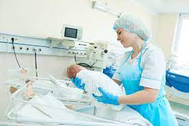

V.I.H
El V.I.H (virus de la inmunodeficiencia humana) es un trastorno vírico que, progresivamente, destruye Glóbulos blancos (leucocitos) y se trata con medicamentos antirretrovirales. Este virus causa el síndrome de inmunodeficiencia adquirida (sida). Cuando una persona se infecta con VIH, el virus ataca y debilita al sistema inmunitario. A medida que el sistema inmunitario se debilita, la persona está en riesgo de contraer infecciones y cánceres que pueden ser mortales. Cuando esto sucede, la enfermedad se llama sida. Una vez que una persona tiene el virus, este permanece dentro del cuerpo de por vida.
ETAPAS: Las tres fases de infección por el VIH son
infección aguda: es la etapa más temprana de infección por ese virus y, por lo general, se manifiesta en un lapso de 2 a 4 semanas de adquirirla.
infección crónica: Durante esta etapa, el VIH continúa multiplicándose en el organismo, pero en concentraciones muy bajas.
síndrome de inmunodeficiencia adquirida (SIDA). El SIDA es la fase final y más grave de la infección por el VIH. Puesto que el virus ha destruido el sistema inmunitario, el cuerpo no puede luchar contra las infecciones oportunistas y el cáncer
Causas
La mayoría de niños con VIH adquieren el virus de su madre VIH positiva. Esto puede ocurrir durante el embarazo, el nacimiento o la lactancia.
Se ha observado que solamente la sangre, el semen, los fluidos vaginales y la leche materna transmiten la infección a otros.
El virus NO se transmite a los bebés por:
• Contacto casual, como abrazarlos o tocarlos.
• Tocar objetos que personas infectadas con el virus han tocado, como toallas o paños.
• La saliva, el sudor o las lágrimas que NO estén mescladas con sangre de una persona infectada.
• Síntomas.
• Colapse sección.
• Síntomas ha sido extendido.
La mayoría de los bebés que nacen de una mujer VIH positiva en los Estados Unidos no se convierten en VIH-positivos si la madre y el bebé tienen una adecuada atención prenatal y postparto que incluye la terapia antirretroviral (TARV).
Los bebés que están infectados con VIH frecuentemente no tienen síntomas por los primeros 2 a 3 meses. Una vez que los síntomas se desarrollan, pueden variar. Los síntomas tempranos pueden incluir:
• Infecciones de candidiasis (cándida) en la boca.
• Peso y crecimiento deficiente.
• Inflamación de las glándulas linfáticas.
• Inflamación de las glándulas salivares.
• Agrandamiento del bazo o el hígado.
• Infecciones del oído y los senos paranasales.
• Infecciones del tracto respiratorio superior.
• Lentitud para hablar, gatear o hablar, comparado con otros bebés saludables.
• Diarrea.
El tratamiento oportuno generalmente previene que la infección de VIH progrese.
Sin tratamiento, el sistema inmunológico del niño se deteriora con el tiempo, y se desarrollan infecciones que no son comunes en niños saludables. Estas son infecciones graves en el cuerpo. Pueden ser causadas por una bacteria, virus, hongos, protozoos o parásitos. En este punto, la enfermedad se ha convertido en sida.
• Pruebas y exámenes.
• Colapse sección.
• Pruebas y exámenes ha sido extendido.
Pruebas para diagnosticar vih en mujeres embarazadas
Todas las mujeres embarazadas deben realizarse pruebas de detección de VIH junto con otros exámenes prenatales.
Las mujeres en riesgo deben ser evaluadas por segunda vez durante el tercer trimestre.
Las mujeres que no han sido examinadas pueden recibir una prueba rápida de VIH durante el trabajo de parto.
A las mujeres que han sido diagnosticadas como VIH positivas durante el embarazo, se les realizarán exámenes de sangre regulares, incluyendo:
• Conteo CD4.
• Carga viral, para revisar la cantidad de VIH en la sangre.
• Una prueba para ver si el virus responde a los medicamentos utilizados para tratar el VIH (llamada prueba de resistencia).
Pruebas para diagnosticar vih en bebés y recién nacidos
Los bebés que nacen de mujeres infectadas con VIH deben ser examinados para detectar la infección por VIH.
Esta prueba sirve para analizar qué tanto VIH hay en el cuerpo. A los bebés que nacen de madres VIH positivas se les deben realizar las pruebas de VIH a los:
• 14 a 21 días después del nacimiento.
• 1 a 2 meses.
• 4 a 6 meses.
Si el resultado de 2 pruebas es negativo, el bebé no tiene la infección por VIH. Si el resultado de cualquiera de estas pruebas es positivo, el bebé tiene VIH. A los bebés que están en alto riesgo de la infección de VIH se les puede hacer la prueba al nacer.
